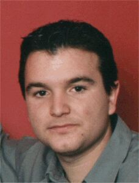

Alejandro López García
Alejandro López García 

This page is within a frameset. View the entire genealogy report of López García families, or surname index of López García pedigrees or report summary of López García heritage from "Árbol Genealógico de Manolo y Amalia".
Genogram Assessment and Intervention.
© 2006 GenoPro Inc. All Rights Reserved.